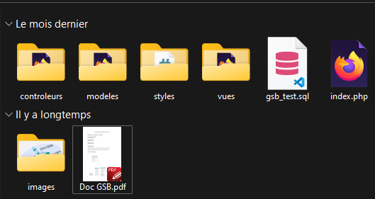
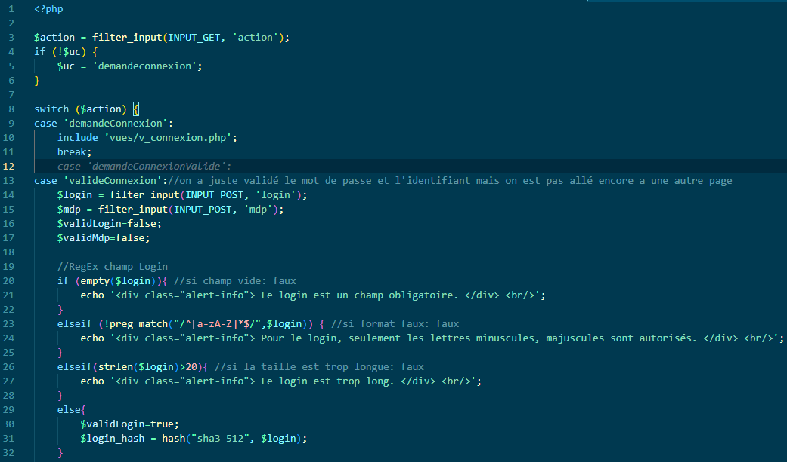
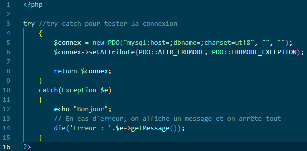
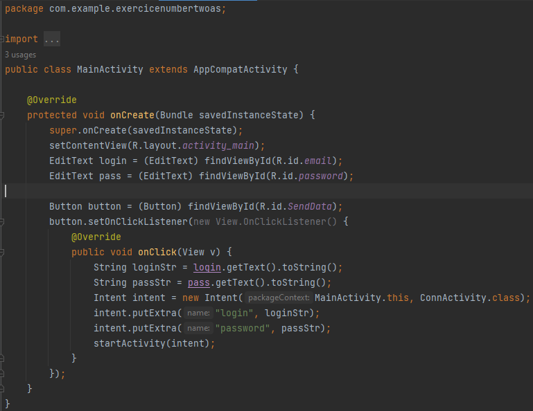

La Formation :
La formation BTS SIO (Services Informatiques aux Organisations) est un BTS en deux ans qui forme les étudiants en vue de devenir des profesionnels dans le domaine du développement d'applications ou bien de la mise en place de systèmes réseaux. Des cours et des projets sont mis en place afin de former les étudiants et de les préparer au monde du travail.

Résumé de la première année :
La première année consiste à se familiariser avec l'informatique, grâce à divers projets, dans plusieurs langages de programmations différents. Et des exercices en réseau, afin de monter une infrastructure réseau stable, bon nombre de notions vues et expérimentées durant la première année sont clés pour bien commencer la seconde. A l'issue des quelques mois d'introduction du BTS, un choix est demandé aux étudiants pour qu'ils choissisent leur spécialisation.
Résumé de la seconde année :
La seconde année est consacrée à la préparation de l'examen pour le BTS. Dès le mois de septembre, des projets plus conséquents que ceux vus en première année sont imposés. Ses projets ont pour objectif de préparer un support pour l'étudiant pour ses épreuves. Par conséquent, les notions vues et maîtrisées sont clé puisque un certain nombre d'entre elles sont mises en application durant les projets de seconde année.
Présentation des projets réalisés durant notre seconde année :
Le projet GSB :
Durant ce projet nous avons, par groupe de 3, nous avons conçu l'interface du site Galaxy Swift Bourdin qui gère les fiches de frais des personnes en déplacement. Nous avons mobilisé les connaissances autour de la gestion de bases de données et du MVC (Modele / View / Controleur) tout au long du projet.

Durant le projet GSB nous avons utilisé l'architecture appelée MVC afin de mettre en place une application web organisée et facilement compréhensible lors de travaux de groupe.
 
Le projet Gestion de clés :
Grâce à ce projet où nous devions concevoir une application web pour le gérant des clés de l'établissement scolaire. Nous avons vu de nouvelles notions de gestion de bases de données et consolidé nos connaissances relatives au MVC.
Ce projet était une opportunité pour nous d'utiliser l'ensemble des notions vues en gestion de données et en conception développement afin de concevoir une application web pour une personne au sein de l'établissement scolaire.

Le projet Gest-Culture :
Le dernier projet de seconde année consistait à concevoir une application sous android pour la Chambre des Agriculteurs du Nord Pas-De-Calais. Nous avons donc eu pour mission de coder avec l'IDE Android Studios, mais également à manipuler une base de données SQLite.

Durant ce dernier projet nous avons été initiés au développement d'applications sous android, mais également à la manipulation de bases de données SQLite.

Les notions de la 2nde année :
- Le CRUD
- Le MVC
- Les jointures SQl
- Les triggers SQl
- Les Vues SQL
- Les contraintes sur associations et entités
- L'héritage
- htaccess